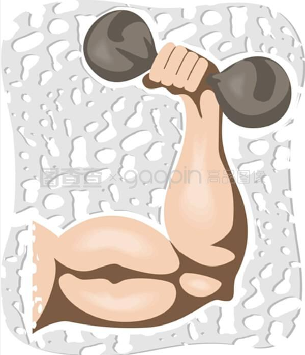
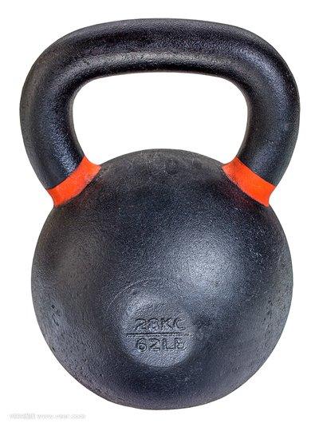
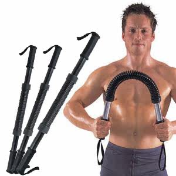
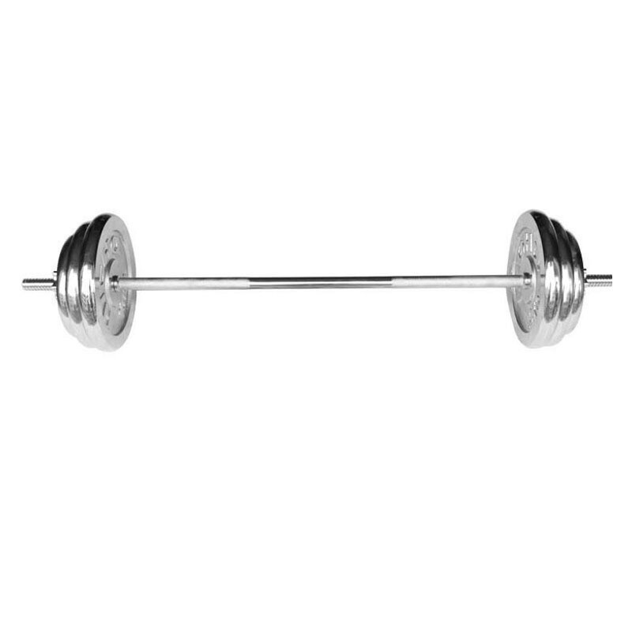
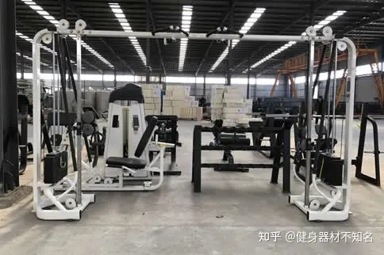
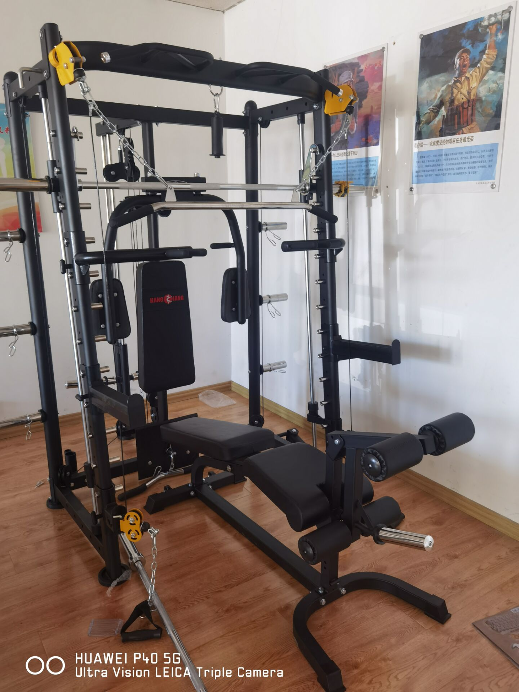

可家用器材
哑铃

哑铃是一种用于增强肌肉力量训练的简单器材它的主要材料是铸铁有的外包一层橡胶它的用途是用于肌力训练肌肉复合动作训练
健腹轮

健腹轮可以锻炼身体的肌肉，关节，是训练当中经典的小型推动器，该训练工具的材质一般都是用塑料造成的，主要锻炼的是腹部肌肉以及腰部，臀部，手臂上的肌肉。
壶铃

用壶铃进行健身锻炼时，可以做各种推、举、提、抛、蹲、跳等练习。壶铃训练与哑铃、杠铃训练的不同之处在于，壶铃对于全面提高整体的爆发力更加有效，因此壶铃与石锁自来便受到格斗士和武术家的喜爱。
臂力器

臂力棒是一个两头戴带把手、中间是强力弹簧。棍棒形状主要锻炼臂力的一种运动器材 根据中间强力弹簧的粗细，分为20kg-60kg不等。臂力器又名握力棒，是用来锻炼臂部肌群，主要锻炼臂力和胸肌，辅助锻炼腕力。臂力器是前臂腕屈肌的一种运动器械，有一定危险性。
杠铃

杠铃是一种核心训练运动训练器材，也是举重所用器材。杠铃运动属于重量训练的一种，只是利用杠铃训练器材，来增进肌肉力量的训练。也可以利用杠铃进行核心训练，促进整体的协调性。
龙门架

龙门架是一个能够很好的锻炼身体各个部位的健身器材，如果使用龙门架来做低位绳索夹胸，那么就可以很好的锻炼到胸肌的上部。如果大家是做高位绳索夹胸，那么及时，能够很好锻炼到下部的胸肌。也就是说，龙门架可以锻炼上下的胸肌。同时，对于手臂的肱二头肌，以及肱三头肌都有很好的锻炼作用。
史密斯

史密斯可以锻炼全身肌肉！史密斯机作为健身房必备的力量训练器械，是一个很强大的存在，可以用来锻炼腰腿臀背，手臂，胸部等几乎身体的全部肌肉群。很多人用它来做深蹲，的确史密斯深蹲无疑是最安全的，也是最适合大多数人锻炼的。
健身车

健身车具有自行车不可比较的优点——可自在发扬本人的骑行速度，可经过健身车上的电子表察看每时每刻的速度、工夫、心率值等;应用它停止锻炼，不只能无效地进步心肺功用，另有助于加强腿部肌肉、减肥和片面进步身体素质，对举动方便、体质较弱和康复病人尤其适用。
药球